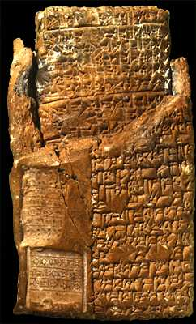

The Challenge -
Tablet with envelope

This is a tablet from the site of Alalakh (in modern Turkey). It dates to around 1720 B.C. and describes property divided between a brother and sister. The tablet was enclosed in a clay envelope to keep it safe with the text repeated and the seals of witnesses impressed.
To learn more about tablets like this visit the Writing Explore.
|
|